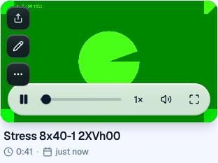
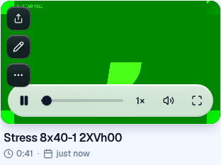
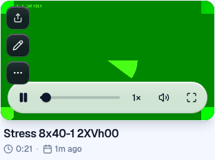
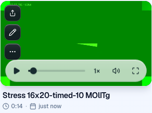
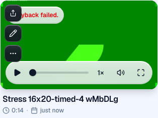
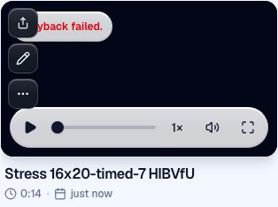
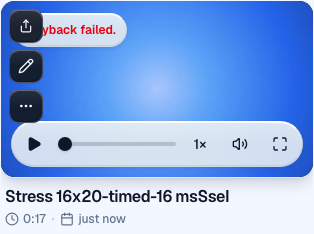

Tested https://staging.clarity.video at 399ae5dda651fba95b963613ad332aebc560d5cf, one QA login, isolated headless Chromium contexts with fake camera/mic. No source changes. Seconds shown as min / median / max.
| Step 1: 8 × 40s | Count | Stop → playable | Failures |
|---|---:|---|---|
| Recording | 8/8 | 13.4 / 14.3 / 16.0 | None; no HTTP errors |
| Step 2: concurrent trims | Count | Save time | Failures |
|---|---:|---|---|
| Trim | 8/8 saved | 4.0 / 4.3 / 5.7 | 6/8 initially replayed original ~41s; HTTP 202, no message |
Reloading restored all eight distinct 21–28s trims.
| Step 3: public playback | Count | Open → 15s played | Failures |
|---|---:|---|---|
| Share/tracking | 8/8 | 16.1 / 16.6 / 16.9 | None; 24 beacons returned 202, two sessions/video in stats |
Two sessions reflect a replay after correcting a shadow-DOM selector.
| Step 4: 16 × 20s | Count | Stop → playable | Failures |
|---|---:|---|---|
| Timer-based retry | 16 saved; 13 played | 21.0 / 33.5 / 111.0 | 3 “Playback failed.”; net::ERR_ADDRESS_UNREACHABLE |
Five labeling retries hit local IPv6 EHOSTUNREACH and inflated playback timings. Eight unaffected successes: 21.0 / 33.1 / 33.6s. All saves: 8.9 / 12.0 / 13.4s. Played files lasted 12.3–15.6s despite 20.0–20.1s timers.
The initial 16-context attempt overloaded this machine: “Timeout 30000ms exceeded.” stopping; captures stretched to ~6m. It produced 149 HTTP 502s across all 16: {"error":"Mux is unavailable.","reason":"mux_unavailable"}. All eventually saved. No HTTP 429 or 409 observed; upstream causes behind 502 are unknown.
| Step 5: cleanup | Count | Delete time | Verification |
|---|---:|---|---|
| Videos + share pages | 40/40 each | 0.2 / 0.9 / 4.3 | Deleted through app APIs; each rechecked 404 |
Customer embarrassment: stale trims silently play footage the seller removed. At 16, shortened captures and playback errors are unacceptable, but local CPU/network failures prevent attributing them solely to server concurrency.
Screenshots: .audit/stress-mux/8x40-{1..8}-{playable,trim-playable,trim-reloaded,share-15s,stats}.png; 16x20-timed-{4,7,16}-playback-failed.png; 16x20-timed-*-playable.png. Per-context timings/errors: results.json and contexts.tsv.
| Context | Stop to playable | Save | Trim save | Trim duration | Capture wall | Media duration | HTTP errors | Notes |
|---|---|---|---|---|---|---|---|---|
| 8x40-1 | 14.585 | 8.594 | 4.55 | 20.996334 | — | 40.6406 | 0 | |
| 8x40-2 | 16.044 | 11.419 | 4.04 | 22.0514 | — | 40.64887 | 0 | |
| 8x40-3 | 13.363 | 8.25 | 4.039 | 23.046099 | — | 41.202 | 0 | |
| 8x40-4 | 14.512 | 8.787 | 5.578 | 24.034167 | — | 40.54653 | 0 | |
| 8x40-5 | 13.763 | 8.638 | 4.034 | 25.025111 | — | 41.116929999999996 | 0 | |
| 8x40-6 | 14.077 | 9.169 | 5.696 | 26.031266 | — | 41.051 | 0 | |
| 8x40-7 | 14.611 | 9.17 | 5.571 | 26.995433 | — | 40.70843 | 0 | |
| 8x40-8 | 13.392 | 7.624 | 4.035 | 28.034766 | — | 40.57137 | 0 | |
| 16x20-1 | — | — | — | — | — | — | 9 | |
| 16x20-2 | — | — | — | — | — | — | 10 | |
| 16x20-3 | — | — | — | — | — | — | 9 | |
| 16x20-4 | — | — | — | — | — | — | 9 | |
| 16x20-5 | — | — | — | — | — | — | 9 | |
| 16x20-6 | — | — | — | — | — | — | 9 | |
| 16x20-7 | — | — | — | — | — | — | 9 | |
| 16x20-8 | — | — | — | — | — | — | 11 | |
| 16x20-9 | — | — | — | — | — | — | 9 | |
| 16x20-10 | — | — | — | — | — | — | 9 | |
| 16x20-11 | — | — | — | — | — | — | 9 | |
| 16x20-12 | — | — | — | — | — | — | 9 | |
| 16x20-13 | — | — | — | — | — | — | 9 | |
| 16x20-14 | — | — | — | — | — | — | 9 | |
| 16x20-15 | — | — | — | — | — | — | 11 | |
| 16x20-16 | — | — | — | — | — | — | 9 | |
| 16x20-timed-1 | 89.169 | 12.758 | — | — | 20.101 | 15.5 | 0 | Driver labeling retry |
| 16x20-timed-2 | 110.736 | 12.286 | — | — | 20.077 | 14.233333 | 0 | Driver labeling retry |
| 16x20-timed-3 | 33.061 | 9.98 | — | — | 20.096 | 13.033333 | 0 | |
| 16x20-timed-4 | — | 12.361 | — | — | 20.006 | — | 0 | Playback failed. |
| 16x20-timed-5 | 110.803 | 12.323 | — | — | 20.109 | 14.266666 | 0 | Driver labeling retry |
| 16x20-timed-6 | 33.151 | 8.879 | — | — | 20.003 | 14.833333 | 0 | |
| 16x20-timed-7 | — | 10.221 | — | — | 20.01 | — | 0 | Playback failed. |
| 16x20-timed-8 | 77.552 | 12.352 | — | — | 20.027 | 13.533333 | 0 | Driver labeling retry |
| 16x20-timed-9 | 32.674 | 11.679 | — | — | 20.141 | 15.63333 | 0 | |
| 16x20-timed-10 | 20.989 | 9.236 | — | — | 20.011 | 14.299999 | 0 | |
| 16x20-timed-11 | 110.956 | 12.383 | — | — | 20 | 13.266666 | 0 | Driver labeling retry |
| 16x20-timed-12 | 33.592 | 10.376 | — | — | 20.003 | 12.299999 | 0 | |
| 16x20-timed-13 | 33.098 | 9.538 | — | — | 20.014 | 15.399999 | 0 | |
| 16x20-timed-14 | 33.458 | 11.591 | — | — | 20.082 | 13.03333 | 0 | |
| 16x20-timed-15 | 21.675 | 13.444 | — | — | 20.005 | 15.13333 | 0 | |
| 16x20-timed-16 | — | 12.444 | — | — | 20.007 | — | 0 | Playback failed. |






